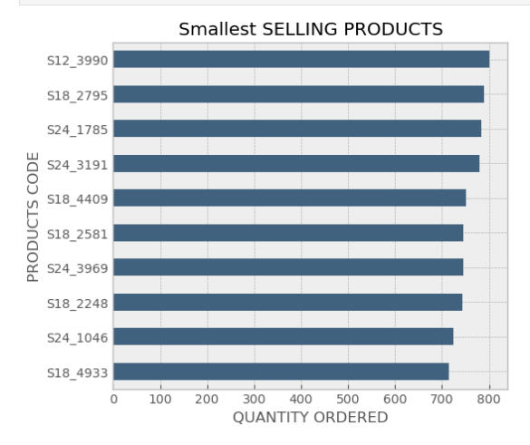
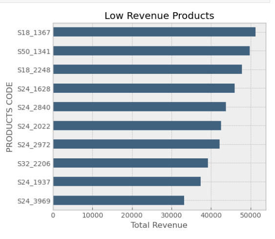
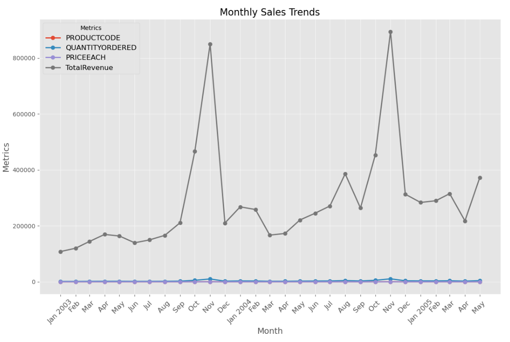

Top 10 Selling Products

Top 10 Revenue Products

نلاحظ أن المنتج (S18_3232) يحقق أعلى مبيعات وإيرادات وبذلك نجد أنه الأكثر طلبا وشراء في هذه الحالة يجب الاستفاده منه من خلال :
- التركيز في التسويق عليه أكثر من خلال حملات مستهدفة أو مواقع التواصل الاجتماعي.
- التأكد الدائم من توافر كميات كافية للمنتج في المخازن
- يمكن العمل على توسيع خطوط الإنتاج الخاصه بالمنتج أو تقديم منتجات جديدة ذات صلة فيه.
أما بالنسبة للمنتجات الباقية التي تحقق أعلى مبيعات وايرادات لكنها ليس بمستوى المنتج s18_3232 (نلاحظ أنها تقريبا تحقق نصف ماحقق S18_3232) لذلك يجب دراسة عوامل نجاح هذا المنتج يمكن لديه ميزات فريدة أو بناء على عوامل خارجية , يجب معرفتها للاستفاده منها مع باقي المنتجات.
Last 10 Selling Products
Last 10 Revenue Products
نلاحظ من الصورة السابقة أن لدينا أسوء عشر منتجات من ناحية المبيع والايردات ويجب أن نقوم ببعض الخطوات لتحسين بيع هذه المنتجات منها:
- تحليل السوق وفهم احتباجات الزبائن لهذه المنتجات.
- تحسين جودة وميزات المنتج وفهم مشاكلها لتجاوزها أو إعادة تصميم كاملة للمنتج.
- وضع سعر منافس مقارنة بالمنتجات البديلة في السوق.
- من المحتمل أنه يحتاج الى استراتيجية تسويق جديدة.
- 5- تقديم عروضات أو تخفيضات لتحفيز الشراء.
Monthly Sales trendy
الاستنتاجات المستخلصة :
نلاحظ من المخطط السابق خط الإيرادات في تزايد مع مرور الوقت (نمو مستدام) لكن هنالك تقلبات شهرية حيث بشهري أكتوبر ونوفمبر يسجل اعلى الإيرادات في حين اقل بباقي الأشهر من المحتمل انه يتعلق بمواسم معينة أو فترات العطلات او حتى التغيرات الطفيفة في الأسعار كلها أسباب ممكن تؤثر على الإيرادات للك يجب التوجه باستغلال الشهرين لتحقيق اعلى نسبة ربح وبالنسبة للاشهر الباقية يمكن العمل على عروض وتخفيضات مناسبة.
Top 5 Revenue Cities

التوصيات لزيادة المبيعات في المدن الأخرى :
- تحليل السوق المحلي: دراسة احتياجات وتفضيلات العملاء في كل مدينة لوضع استراتيجيات مخصصة.
- استهداف عروض ترويجية: تقديم خصومات وعروض خاصة لجذب العملاء في المدن الضعيفة، مثل الشحن المجاني أو التخفيضات على المنتجات الأكثر طلباً.
- زيادة الحملات الإعلانية المحلية: تنفيذ حملات إعلانات مستهدفة عبر وسائل التواصل الاجتماعي ومحركات البحث، مع التركيز على السكان المحليين.
- التعاون مع مؤثرين محليين: الشراكة مع شخصيات مؤثرة في المدن المعنية للترويج للمنتجات بطرق جذابة.
- تحسين خدمة العملاء: توفير دعم عملاء متميز واستجابة سريعة لاستفسارات وشكاوى العملاء لتعزيز الولاء وزيادة الشراء.
- تجربة تسوق سهلة ومريحة: تحسين الموقع الإلكتروني وتجربة المستخدم لجعل عملية الشراء أكثر سهولة.
- تفعيل التسويق بالمحتوى: نشر محتوى يتحدث عن فوائد المنتجات وتطبيقاتها في الحياة اليومية للمساعدة في جذب العملاء.
- مراقبة الأداء بشكل مستمر: متابعة نتائج المبيعات في المدن المنخفضة باستمرار وتعديل الاستراتيجيات بناءً على البيانات.
يمكننا تقديم التوصيات بشكل عام للشركة بناءً على ماسبق:
- التركيز على المنتجات التي تحقق أعلى المبيعات : نتجه إلى التركيز على المنتجات التي تحقق لها عائدات عالية وقد باعت كميات كبيرة، وفي الوقت نفسه يكون سعر القطعة منها مرتفعًا. هذه المنتجات توحي بأنها ذات جدوى اقتصادية عالية وتستحق المزيد من الاهتمام.
- تحسين تسويق المنتجات ذات الطلب القوي: بالنسبة للمنتجات التي حققت مبيعات جيدة ولكن متوسط سعر القطعة منها منخفض، فربما يكون من المناسب تحسين استراتيجيات التسويق لهذه المنتجات لزيادة قيمة المبيعات.
- تقديم تخفيضات أو عروض على المنتجات ذات المبيعات المنخفضة: للمنتجات التي لم تحقق مبيعات عالية على الرغم من سعر وحدتها المرتفع، يمكن مراجعة استراتيجيات التسويق والنظر في تقديم تخفيضات أو عروض خاصة لجذب المزيد من العملاء وزيادة المبيعات.
- التوسع في فئات المنتجات الناجحة: إذا كانت هناك فئات من المنتجات تظهر أداءً ممتازًا، يمكنك التفكير في توسيع خطوط المنتجات في تلك الفئات أو تطوير منتجات جديدة تتماشى مع الطلب القائم.